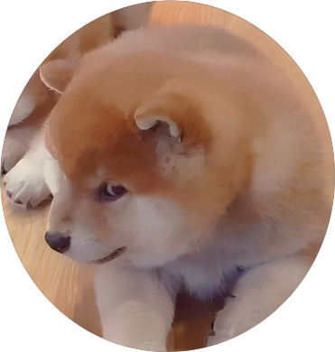
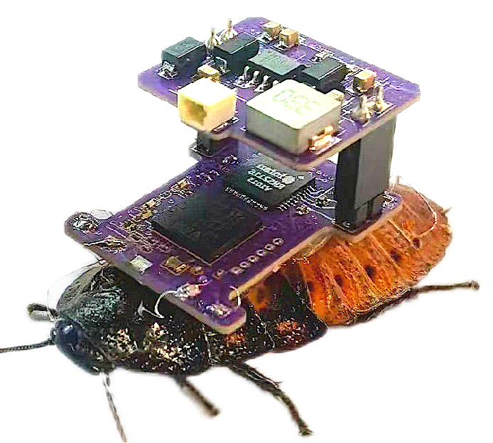
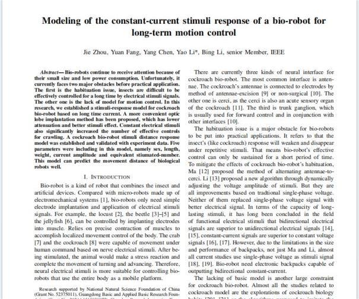
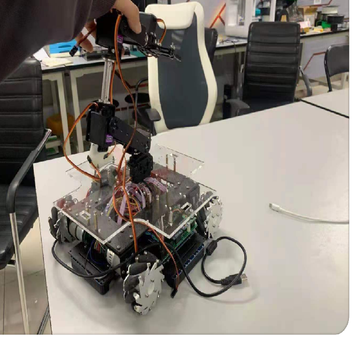

|
Jie Zhou I completed my Bachelor's degre with GPA ranking 1 / 153 at BUCT(211 in China) as Beijing Outstanding Graduate in 2023. Now I am a student at HITSZ(985, C9), the State Key Laboratory of Robotics and Systems(Shenzhen) for my research master degree. I have received two national scholarships, three national competition awards and two Beijing competition awards. I am an outstanding mechanical and hardware engineer, a decent programmer. Based on my past experiences and insights, my research interests focus on robotics, electronics, materials, medicine, human-computer interaction, modeling and machine learning. |
 |
{kind=link}
Research & EngineeringMy main projects in BUCT included quadruped robot, biomimetic deformation robots and machine vision with arm. At HITSZ, my main research direction is task planning for multi biological robots. The fields included functional electrical stimuli, materials, UWB, motion planning and machine learning. In addition, I participated in a force sensor development. |
|


|
Modeling of the constant-current stimuli response of a bio-robot for long-term
Jie Zhou, Yuan Fang, Yang Chen, Yao Li*, Bing Li* ; 2024 - present unreview, 2024; excerpts Focused on the two major obstacles in the current development of cockroach robot: habituation and lack of basic model. Main work included two new methods and one new model. Optic lobe implantation was proposed; a more effective stiumli signal, bidirectional constant-current was implemented. Bio-robot's stimulated-motion response was modelled by machine learning approach in conjunction with theoretical extrapolation and validation. I was the first author and led all the work. Click excerpts for details. |

|
Research on autonomous navigation technology of pipeline bio-robot motion control
Jie Zhou, Songlin Yang, Songsong Ma, Kai Hu ; 2023 - 2024 A cockroach robot for pipeline maintenance that enabled localization, image retrieval and navigation. UWB and imu fusion positioning ensured positioning error not more than 10 cm. A yolov5-based image recognition algorithm was developed for pipeline identification and steering. It is a Key Technologies R & D Program of Shenzhen, I hosted all the thing above and completed it in 2024.06. |

|
Multi-dimensional force sensor based on origami structure
Yunong Li, Jiahai Ma, Jie Zhou ; 2022 - 2023 Aimed to create a sensor inspired by Origami Configurations.3-DOF Yoshimura Origami Unit Static model was derived. An equivalent circuit was designed and its resonant frequency was obtained by simulation verification. I were responsible for hardware design, fabrication and inductive sensor design(including derivation formulae). |

|
Automatic inspection of drink bottle labelline based on machine vision
Jie Zhou, Kaifang Dang* ; 2023 A quality inspection line for beverage bottles was built based on yolov5. Defects such as broken labels, missing caps and so on could been detected. A Raspberry Pi arm was used as an actuator instead of cylinder and hand-eye separation architecture was implemented to address the lack of arithmetic power of Raspberry Pi. This project was my undergraduate graduation design project and the 2023 excellent graduation design project in BUCT. |

|
Roll dung beetle - a biomimetic robot with multiple motion modes
Jie Zhou, Yuchang Sun, Ding Nin, Jiahao Fu, Ding Nin, A.budu ;2021-2022 A bionic robot inspired by dung beetle. It had two motion mode: crawlling and rolling. Its crawling mechanism based on the Crane linkage. The rolling mechanism consisted of two semi-circular support. A screw nut implemented the switching between crawling and rolling. All technical content were done me lonely. What I'm most proud is that robot only cost 312.6RMB. It achieved China Student Mechanical Innovation Design Competition, 2nd prize in Beijing. |

|
Ros-based quadruped robot
Zhengxiao Han, Jie Zhou ; 2020-2021
The dog's mechanical design referenced and improved upon Stanford's Puppy. Compared to Puppy, our joint motors were embedded to the inner body, which enhanced robot robustness.
Rivz simulation and kinematic inverse solutions were used for trot gait planning. Laser radar built environmental maps with cartographer. I done mechanical, assembly and bottom level control, included kinematic inverse solutions.
follow-up: Han and Xiongshi Xu successfully developed this program into an open-source business project: miniPuppy. Although I didn't participate in anything after the competition, I am still proud of it. |
Non-awarded works |
|  |
A 32-sensor Mecanum wheel car with arm, aimed to participate in the Beijing Engineering Training Event. I had spent a lot of effort on it, but unfortunately the vehicle short-circuited during the competition. Always a pity! |
ScholarshipsHITSZ First-class Scholarship in 2024; BUCT Outstanding Competition Scholarship in 2023; National Scholarship in 2022; National Scholarship in 2021; Li Wen and Yang Yan Scholarship, Social Fund in 2020; People's Second Class Scholarship in 2020 |
Honors and Competition AwardsOutstanding graduate of Beijing in 2023; BUCT Excellent Student in 2021; BUCT Merit Student in 2020; The 12th MathorCup Mathematical Modeling Challenge, 1st prize in China, 2022; Shenzhen Cup National Mathematical Modeling Competition, rank16 in China, 2021; National Training Program of Innovation and Entrepreneurship, China, 2021 China Mechanical Innovation Design Competition, 2nd prize in Beijing , 2022 The 8th ”Internet+” Innovation and Entrepreneurship Competition, 2nd prize in Beijing, 2022 lots of other school-level scholarships or honors. |
|
Thanks my best friend Zhengxiao Han's tips for this homepage. Thanks original author Leonid Keselman's Jekyll fork of this page. |